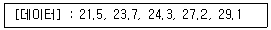
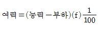
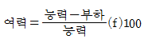
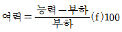

철도차량정비기능장 (2005-07-17 기출문제)
1과목: 임의 구분
1. 다음 중 계량치 관리도는 어느 것인가?
- R 관리도
- nP 관리도
- C 관리도
- U 관리도
(정답률: 79%)

2. 다음 데이터로부터 통계량을 계산한 것 중 틀린 것은?

- 중앙값(Me) = 24.3
- 제곱합(S) = 7.59
- 시료분산(s2) = 8.988
- 범위(R) = 7.6
(정답률: 81%)
3. 여력을 나타내는 식으로 가장 올바른 것은?
- 여력 = 1일 실동시간 × 1개월 실동시간 × 가동대수



(정답률: 88%)
4. 다음 중 로트별 검사에 대한 AQL 지표형 샘플링검사 방식은 어느 것인가?
- KS A ISO 2859-0
- KS A ISO 2859-1
- KS A ISO 2859-2
- KS A ISO 2859-3
(정답률: 91%)
5. 다음 중에서 작업자에 대한 심리적 영향을 가장 많이 주는 작업측정의 기법은?
- PTS법
- 워크 샘플링법
- WF법
- 스톱 워치법
(정답률: 90%)
6. 생산보전(PM:Productive Maintenance)의 내용에 속하지 않는 것은?
- 사후보전
- 안전보전
- 예방보전
- 개량보전
(정답률: 79%)
7. 직류 주발전기에서 일정출력을 유지하기 위한 계자는?
- 차동계자
- 기동계자
- 보상계자
- 정류계자
(정답률: 65%)
8. SIV에 대한 설명으로 맞는 것은?
- AC 380V와 전동차 제어전원 DC 100V를 공급하는 보조전원장치
- 사령실과 기지, 전차로 연결된 기지보수자와 통신하는 전원장치
- AC 440V와 전동차 제어전원 DC 100V를 공급하는 보조전원장치
- DC 1500V의 전차선 전압을 강하하는 전원장치
(정답률: 83%)
9. 전기동력차에서 판토그래프의 압상력으로 옳은 것은?
- 약 60㎏f/cm2
- 약 6㎏f/cm2
- 약 4㎏f
- 약 6㎏f
(정답률: 90%)
10. 다음 중 열차 운전의 기초가 되는 것 중 전기차의 성능이 아닌 것은?
- 견인성능
- 제어성능
- 주행성능
- 제동성능
(정답률: 79%)
11. 도시철도 5호선용 표시기장치의 종류가 아닌 것은?
- 열차번호표시기
- 행선표시기
- 객실승객안내표시기
- 운전시각표시기
(정답률: 94%)
12. 도시철도 5호선에서 사용하는 VVVF인버터의 동작원리에 대한 설명이 아닌 것은?
- GTO-THYRISTOR를 사용하고 GTO의 스위칭 작용에 의하여 3상교류를 발생시킨다.
- 출력전압, 주파수를 가변제어하고 유도전동기에 의해 역행제어 회생제어를 행한다.
- 출력전류를 가변제어하는 방식으로 ON,OFF의 펄스폭을 바꾸는 펄스폭변조방식을 채택하고 있다.
- 인버터에 의한 역행, 회생의 절환은 슬립주파수의 제어에 의해 수행된다.
(정답률: 80%)
13. 발전전압이 60V, 발전전류 2400A, 주발전기의 효율이 80%일 때 디젤전기기관차의 구동마력은 약 몇 HP 인가?
- 220
- 241
- 250
- 265
(정답률: 77%)
14. 객차의 전기장치 중 전원분산방식에 대한 특징이 아닌 것은?
- 정차중 전원은 축전지에서, 운전중 전원은 발전기에서 공급하고 있는 방식이다.
- 객차 편성중 1개 전원이 고장이 되어 사용불능일 경우 전차량에 영향을 미친다.
- 발전기는 차축의 회전에 의해 구동되고 운전중의 부하를 담당함과 동시에 축전지에 충전한다.
- 전원이 직류 24V로서 트랜스 인버터를 사용하여 승압하고 직류를 교류화할 필요가 있어 기기를 복잡화하는 불편이 있다.
(정답률: 94%)
15. 전기차에서 주회로 과전류 보호기로 볼 수 없는 것은?
- 주퓨즈
- 차단기
- 고속도 차단기
- 고속도 한류기
(정답률: 60%)
16. 전기차에 사용되는 판상 혹은 선형의 주저항기로서 옳지 않는 것은?
- 기계적 강도가 약하다.
- 표면적이 크기 때문에 냉각효과가 크다.
- 소형 경량화에 유리하다.
- 강제 통풍에 적합하다.
(정답률: 82%)
17. 전기동차에서 TCMS 유니트의 구성품이 아닌 것은?
- TC(Train Computer)
- CC(Car Computer)
- 통신연결 장치
- 모니터 장치
(정답률: 67%)
18. 7000대 디젤전기기관차의 졸음방지 장치에서 E-B 전자변의 역할은?
- 기관사가 졸음 방지장치 페달을 정상적으로 조작할 경우 이 전자변이 여자 되어 P-2-A 제동작용변의 공기를 배출하여 제동
- 기관사가 졸음 방지장치 페달을 정상적으로 조작하지 않을 경우 이 전자변이 여자 되어 P-2-A 제동작용변의 공기를 배출하여 완해
- 기관사가 졸음 방지장치 페달을 정상적으로 조작하지 않을 경우 이 전자변이 무여자(소자) 되어 P-2-A 제동 작용변의 공기를 배출하여 제동
- 기관사가 졸음 방지장치 페달을 정상적으로 조작할 경우 이 전자변이 무여자(소자) 되어 P-2-A 제동작용변의 공기를 배출하여 완해
(정답률: 85%)
19. 서울지하철 5호선을 비롯한 Cross Blending제동 방식을 적용하고 있는 전동차의 제동제어 내용이 아닌 것은?
- 구동차(M차)는 회생제동을 우선 사용한다.
- 구동차(M차)의 회생제동 부족분은 부수차(T차)의 공기 제동이 부담한다.
- 구동차(M차)의 회생제동력 및 부수차(T차)의 공기제동력 부족시 구동차(M차)의 공기제동력이 작용한다.
- 회생제동 실효시 부수차(T차)의 공기제동력만 증가한다.
(정답률: 75%)
20. 전동차 압축공기공급장치에 적용된 공기건조기(Twin Tower Air Dryer형)의 검사 및 보수방법이 잘못된 것은?
- 변형이나 상처, 흠이 있는 체크밸브는 교환한다.
- 스프링은 녹, 왜곡이나 영구변형이 발생했는지 검사하고 필요시는 교체한다.
- 비드형 건조재가 변색되었을때는 물로 잘 씻어 햇볕에 말린후 사용한다.
- 손상된 전선은 교환한다.
(정답률: 93%)
2과목: 임의 구분
21. 새마을형동차에서 전공 제동 7단 일 때 제동통의 압력은?
- 2.5bar
- 3.5bar
- 3.8bar
- 5bar
(정답률: 73%)
22. 객화차에 적용하고 있는 제동배율은?
- 5∼9
- 9∼10
- 10∼12
- 12∼24
(정답률: 85%)
23. Cross Blending 제동방식을 적용하고 있는 전동차의 혼합제동 모드별 공기제동계산을 잘못 설명한 것은?
- 비혼합제동시에는 회생제동을 실행하지 않는다.
- 혼합제동모드에서는 공기제동이 우선이다.
- 정상혼합제동모드에서는 T차와 M차의 공기제동이 동등한 우선권을 가진다.
- 특별혼합제동모드에서는 회생제동 공기제동이 공존한다.
(정답률: 68%)
24. 디젤전기기관차에 사용되는 살사시한계전기 약호는?
- WSC
- TDS
- STD
- SCR
(정답률: 89%)
25. 전동차의 주차제동장치 내장형 브레이크실린더의 작용 방식은?
- 스프링작용식 공기완해 방식
- 스프링작용시 완해, 제동방식
- 공기완해, 제동 방식
- 공기제동 스프링완해 방식
(정답률: 78%)
26. 대차프레임에 전자석을 궤조면과 대면하게 취부하여 이것과 궤조와의 사이에 흡인력으로 제동작용를 체결하는 제동을 무엇이라 하는가?
- 전자 발전기제동
- 전자드럼제동
- 전자트락제동
- 전자흡인력제동
(정답률: 69%)
27. ATS관계 초제동에서 몇초 이내 확인제동이 필요한가?
- 1
- 2
- 3
- 5
(정답률: 75%)
28. 전기동차 SELD형 제동장치의 일반사항으로 틀린 것은?
- 전자직통 제동장치로서 발전제동을 주로 사용한다.
- 정지시에는 발전제동력이 약화되면 공기제동을 사용한다.
- 발전, 전자직통, 자동제동비상은 하나의 제동핸들로 제어한다.
- 발전제동의 고장발생시는 수동조작하여 전자직통 제동으로 전환한다.
(정답률: 83%)
29. H-6-L제동변에 대한 설명으로 틀린 것은?
- 제동을 체결 완해하는 장치이다.
- 제동계통에 충기되는 동안 제동관과 균형공기류의 압력은 협로균형피스톤에 의하여 균형을 이룬다.
- 핸들위치는 왼쪽부터 완해(release), 운전(running), 홀딩(holding), 래프(lap), 상용제동(service), 비상제동(emergence) 순이다.
- 비상제동위치에서는 제동관 공기를 신속하게 충기 시키므로서 최단시간내에 최대제동력을 발생케 한다.
(정답률: 77%)
30. 객차 승강문이 닫히는중에 승객이 합승하여 문 사이에 승객이나 소지품이 끼이게 되면 승객보호장치인 프레스 웨이브가 작동하여 문은 자동적으로 열리게 되나 최대 두께 몇 mm 이하의 물체가 승강문 사이에 끼이면 프레스 웨이브가 작동되지 않도록 되어 있나?
- 3
- 5
- 7
- 10
(정답률: 91%)
31. 코일스프링의 상수가 10kg/cm 이고 여기에 120kg의 하중이 작용하고 있다. 변위량은 몇 cm인가?
- 12
- 20
- 35
- 38
(정답률: 89%)
32. 객차에 사용되는 차륜의 직경 원형은 860mm이다 최소 몇 mm까지 사용할 수 있는가?
- 786
- 776
- 766
- 756
(정답률: 83%)
33. 진공식 오물처리장치에서 사용중지 표시등이 점등되는 경우로 거리가 먼 것은?
- 공압측 압력공기가 3.5㎏f/cm2 이하일 때
- 변기 세정수가 수위에 도달시
- 탱크 누수로 19초 이내 진공형성이 안될 때
- 진공스위치가 고장일 때
(정답률: 88%)
34. 새마을형동차 에어백의 자동높이 조정장치 완해변은 양측의 압력차이가 얼마 이상일 때 작동하는가?
- 0.5bar
- 1.3bar
- 1.8bar
- 1.5bar
(정답률: 83%)
35. 우리나라에서 객차에 사용하고 있는 자동 연결기의 형식은?
- AAR type
- H type
- D type
- E type
(정답률: 90%)
36. 객실 조명장치의 평균 조도(Lux)는 얼마인가?
- 100
- 200
- 300
- 400
(정답률: 89%)
37. 다음 중 화차용 아취바 대차의 장점과 거리가 먼 것은?
- 구조가 간단하다.
- 제작비가 저렴하다.
- 축상과 후레임 과의 유동이 없다.
- 중량이 가볍고 부담하중이 적다.
(정답률: 75%)
38. KT23형 대차의 2차현수장치로서 맞는 것은?
- 볼스터레스 공기스프링 + 수직오일댐퍼
- 세브론 고무스프링 + 1차 수직오일 댐퍼
- 원통코일스프링 + 수직오일 댐퍼
- 세브론 고무스프링 + 횡오일 댐퍼
(정답률: 77%)
39. 다음중 기관사가 객실로 안내방송을 할 수 있도록 설치된 디젤전기기관차 방송장치의 구성요소가 아닌 것은?
- 제어증폭기
- 전광판
- 마이크로폰
- 출력증폭기
(정답률: 94%)
40. 1 냉동톤 이란?
- 1시간당 2400kcal를 흡수할 수 있는 능력을 말한다.
- 1시간당 7968kcal를 흡수할 수 있는 능력을 말한다.
- 1시간당 3320kcal를 흡수할 수 있는 능력을 말한다.
- 1시간당 2700kcal를 흡수할 수 있는 능력을 말한다.
(정답률: 92%)
3과목: 임의 구분
41. 디스크 제동장치는 답면 제동장치에 비해 다음과 같은 특징이 있다. 맞지 않는 것은?
- 제동력이 균일하다.
- 외륜에 고장을 유발하는 일이 적다.
- 제동시 소음이 적다.
- 중량이 무거워서 제동력이 좋다.
(정답률: 90%)
42. 다음 중 열차가 곡선을 통과시 원심력으로 인한 작용을 감소 시키는 시설은?
- 스랙
- 완화 곡선
- 캔트
- 호륜 궤조
(정답률: 92%)
43. 자기부상열차의 초전도방식에 대한 설명이 아닌 것은?
- 부상높이가 높기 때문에 궤도보수가 거의 필요없고 고속운전에 적합하다.
- 1차전원이 궤도측에 있으므로 진행중인 차량에 대용량 송전이 불필요 하다.
- 가 감속성능이 좋고 구배에 강하다.
- 공심(空心)의 구조로 견인력이 적어 효율이 나쁘다.
(정답률: 83%)
44. 기어에서 두축이 평행한 경우에 사용되는 것이 아닌 것은?
- 워엄기어
- 스퍼어기어
- 헬리컬기어
- 랙과 피니언
(정답률: 75%)
45. 쵸파제어 방식의 특징이 아닌 것은?
- 저항기가 필요하지 않다
- 접촉불량이 일어난다
- 평활리엑터가 필요하다
- 환류용 다이오드가 필요하다
(정답률: 74%)
46. 소음 대책 중 차량측의 대책은?
- 소음원의 경감과 소음차단
- 장대레일 적용
- 발라스트(Ballast) 궤도 적용
- 방음벽 적용
(정답률: 82%)
47. 열차의 제동거리 계산시 차륜과 같은 회전부분의 관성계수를 일반열차에는 몇 % 적용하는가?
- 3 %
- 6 %
- 9 %
- 11 %
(정답률: 50%)
48. chopper 차의 기본 주파수 (Hz)와 주기(ms)는?
- (153) (2.53)
- (283) (3.53)
- (153) (3.53)
- (283) (2.53)
(정답률: 78%)
49. 열차 속도가 90 km/h 일 때 제동을 취급하였더니 84 m 지나서 제동효과(감속력)가 나타나기 시작했다. 공주 시간은?
- 1.26 s
- 2.26 s
- 3.36 s
- 4.46 s
(정답률: 66%)
50. 차량의 상하진동은?
- 대차 스프링 장치와 관계가 없다.
- 습동부의 마찰과 관계가 없다.
- 차체의 강성과 관계가 있다.
- 차체 및 대차의 중량과 관계가 없다.
(정답률: 88%)
51. 2행정 기관의 장점이 아닌 것은?
- 동일 피스톤 배기량으로 많은 동력 발생
- 무변의 것도 있어 변기구가 간단함
- 평균 가스온도가 높음
- 회전력이 균일하여 플라이휠이 가벼움
(정답률: 82%)
52. 디젤기관의 배기가스 공해에서 가장 문제가 되는 것은?
- 탄화수소(HC)
- 일산화탄소(CO)
- 매연
- 이산화탄소(CO2)
(정답률: 75%)
53. 디젤기관에서 저수압 및 크랭크케이스 압력탐지기 조립체의 검수와 관계 없는 것은?
- 저수압 및 크랭크케이스 압력탐지기는 주기적으로 시험해야 한다.
- 압력탐지기는 수동 공기펌프를 이용하여 시험한다.
- 기관을 유전속도에서 운전하면서 밸브를 열어 냉각수를 흐르게하면 탐지기는 1, 2만회에 작동해야 한다.
- 테스트 밸브 핸들을 수평위치로 놓을 때 밸브내의 작은 오리피스 구멍으로부터 방출되는 냉각수는 일정해야 한다.
(정답률: 73%)
54. 디젤전기기관차에서 835 rpm 때 제동마력 1948 HP을 발휘하는 SD18형 동력차 기관에서 BSFC 0.24 L/HP·hr이면 인젝터 1 행정마다 분사하는 연료량은?
- 385 mm3
- 853 mm3
- 358 mm3
- 583 mm3
(정답률: 72%)
55. 디젤전기기관차의 ORS가 자화되었을 때 부하 조정기가 최대 계자 위치에서 최소 계자 위치까지 이동되는 시간은?
- 3 s
- 6 s
- 15 s
- 30 s
(정답률: 70%)
56. 디젤전기기관차의 645계 기관에서 캠에 의하여 작동되는 것으로 옳지 않은 것은?
- 인젝터 로커암
- 배기밸브 로커암
- 로커암 파울
- 크랭크실 압력 탐지장치
(정답률: 63%)
57. 디젤전기기관차의 윤활유 고유온 탐지장치가 작용하면 기관은 어떻게 되는가?
- 기관이 정지된다.
- 기관이 유전으로 된다.
- 발전이 중지된다.
- 기관회전이 4 놋치 이상 않된다.
(정답률: 90%)
58. 디젤기관의 2행정사이클의 소기방식으로 옳은 것은?
- 반전소기식
- 횡단소기식
- 단류소기식
- 루프소기법
(정답률: 80%)
59. 터보차저에 대한 설명이 아닌 것은?
- 송풍기는 터빈휠에 직결하여 사용 한다
- 공기밀도가 높은 곳에서 연소공기를 충분히 공급할 수 있는 능력이 있다
- 기관부하가 낮으면 기관후단 치차열에서 크랭크축으로 부터 동력을 지원받아 필요한 연소공기를 공급하도록 되어 있다
- 터보차저는 공기압축기, 가스터어빈, 치차구동부품, 오우버런닝 클러치 등으로 구성된다
(정답률: 80%)
60. 전기기관차의 주변압기유 냉각송풍장치(MVRH)와 관계 되지 않는 것은?
- 구동전동기는 4극 직권전동기가 사용됨
- 공칭 송풍량은 6.5 m3/s임
- 전동기는 AC 220V에 의해 구동됨
- 최대 3600rpm으로 회전함
(정답률: 94%)